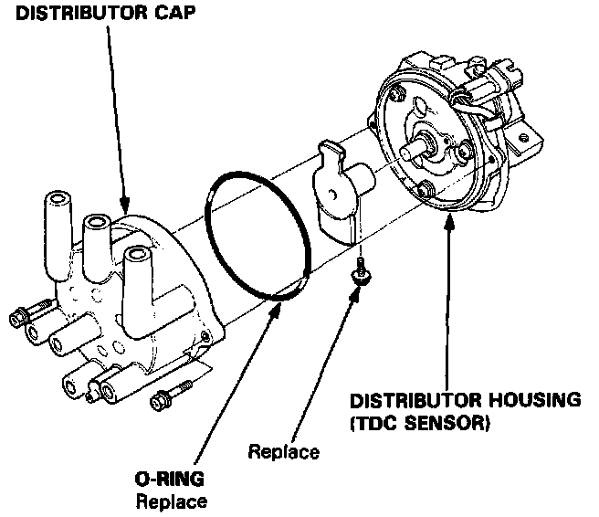
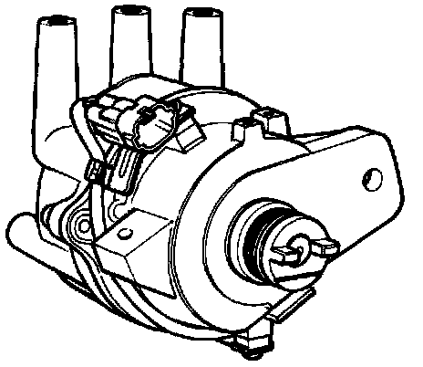

TDC Sensor

Removal:
1. Remove the distributor.
2. Remove the distributor cap from the distributor housing (TDC sensor).

Installation:
1. Install a new 0-ring.
2. Install the distributor cap to the distributor housing (TDC sensor).
3. Install the distributor to the cylinder head.